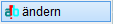

")
")
Ändern von Textinhalten und -eigenschaften bei Einzel- oder Textfeldern.
|
Hinweis: |
|
"Ältere" Blocktexte, die mit ISBCAD 2015 oder früher erstellt wurden, können nur zeilenweise ausgewählt und bearbeitet werden. Wir empfehlen, diese Blocktexte mit der Textfeld-Funktion neu zu erstellen. |

|
Tipp: |
|
Mit der Funktion [Konst1 | FenÄnd | Attrib] können Sie die Eigenschaften mehrerer Textelemente vereinheitlichen. |

1.Text auswählen
§Klicken Sie den gewünschten Text an. [Welcher Text].
Wenn Sie einen Makrotext anklicken, wird der Makrotext-Name in geschweiften Klammern in die Eingabe geschrieben. Es kann nur der Makrotext-Name bearbeitet werden. Um den Textinhalt bearbeiten zu können, siehe Makrotext definieren und bearbeiten (Makrotext-Editor).
2.Text bearbeiten
Die Vorgehensweise ist abhängig vom erkannten Texttyp.
Einzeltexte:
§Um nur die Texteigenschaften zu ändern:
Verwenden Sie die Optionen im Funktionsbereich und bestätigen Sie alle weiteren Abfragen mit der Eingabetaste.
§Um den Textinhalt zu ändern:
Überschreiben Sie den Text im Eingabefeld und bestätigen Sie mit der Eingabetaste. [Text eingeben oder einen Text anklicken].
Alternativ können Sie den Textinhalt von einer anderen Textzeile übernehmen. Klicken Sie dazu die Textzeile mit dem gewünschten Textinhalt an.
§Bestätigen Sie die Abfragen Winkel und Lage jeweils mit der Eingabetaste.
Alternativ können Sie die Angaben ändern und die Textzeile per Mausklick an anderer Stelle absetzen. Der geänderte Text wird in der Zeichnung angezeigt. Sie können sofort einen weiteren Text ändern.
Textfelder:
§Bearbeiten Sie den Text im Textfeld mit den verfügbaren Optionen.
§Um die Bearbeitung abzuschließen, klicken Sie mit der rechten Maustaste in einen freien Bereich außerhalb des Textfeldes.
Siehe auch:
Zugehörige Referenzen: